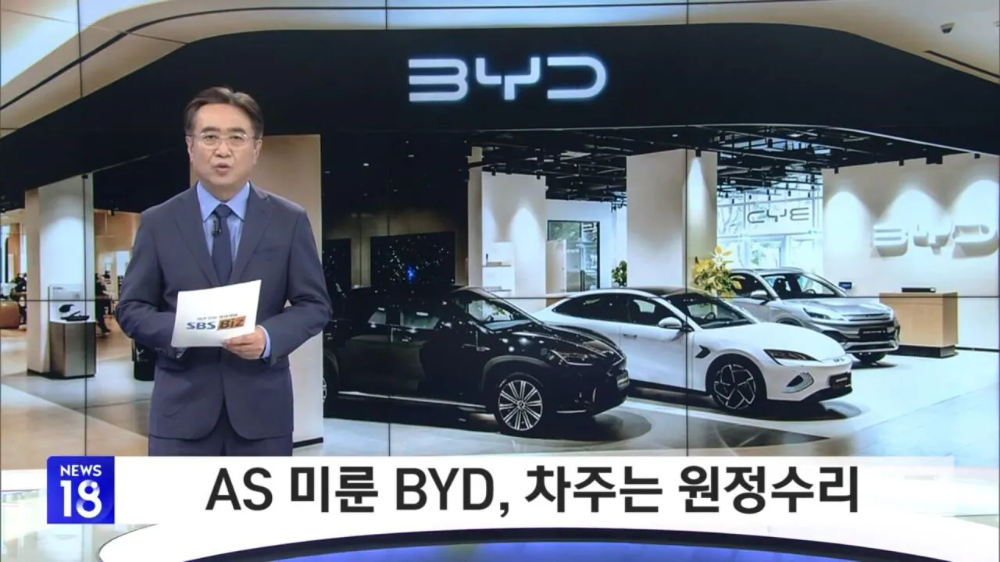
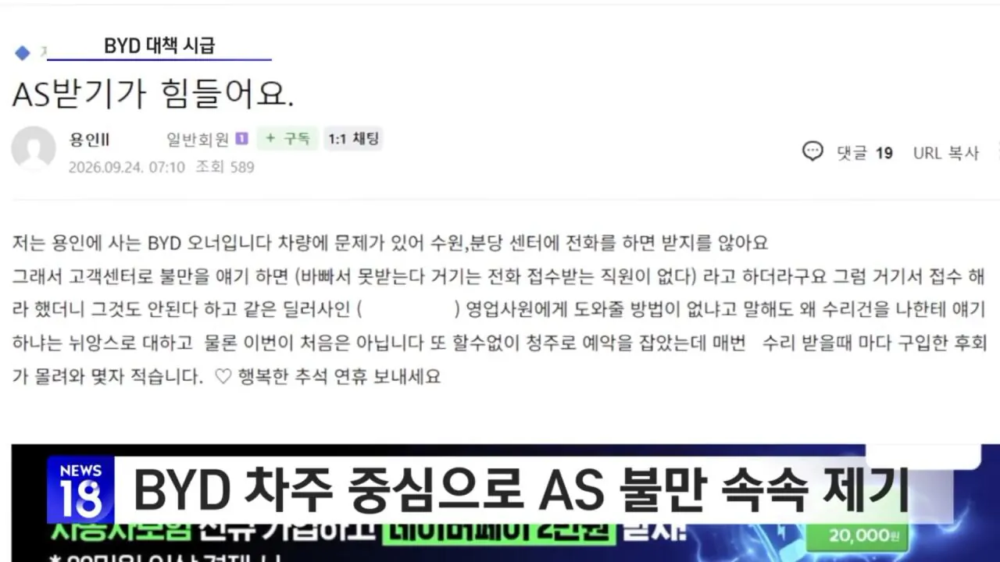
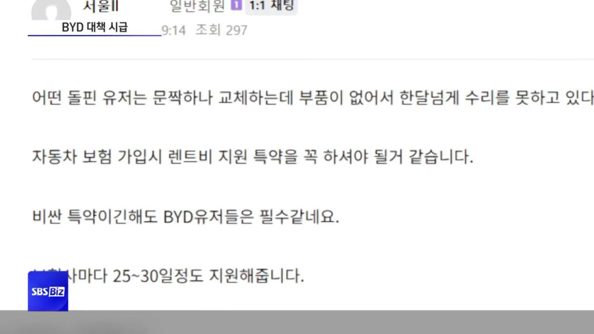
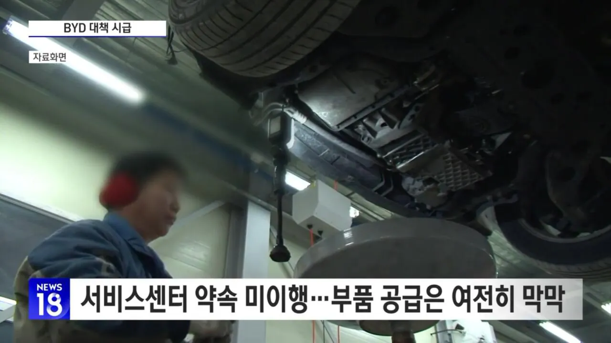
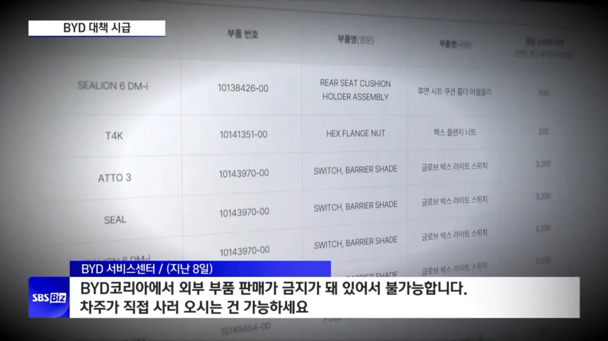

니들이 선택한 BYD다 ㅋㅋㅋㅋㅋㅋ





니들이 선택한 BYD다 ㅋㅋㅋㅋㅋㅋ
꼭 달리는 댓글 없나 ㅋㅋ 현기차도 수리하는데 부품없어서 몇달 걸린다고 ㅋㅋㅋ
그건 모르겠는데
외제차들은 중국부품으로 써도 된다고 바뀌지않음?
그냥 중국차 = 외제차 인거같음. 이미 공장도 중국공장이고
중국 부품이 OEM 말하는건지 모르겠네 그래도 보증수리는 정품으로 해줘야 하는거 아닌가 싶으 ㅁㅋㅋ
그거 한동안 차 커뮤나 유튜버들한테 존나 난리나서 흐지부지 되었을걸?
존나 현기 당일 되는것도 개많은데 엌ㅋㅋㅋ
이래서 중국차가 아니라 신뢰와 전통의 프랑스차를 타야함
지리 택갈이 르노?
바게트에 무친련 가트니라고ㅋㅋ
닉값ㄷㄷ
길가다 byd보이면 괜히 짠함
수리비 감가 때문에 못탄다니까 개드립에서 달리던 댓글
그게 일본에서 현기차 보던 시선 아님?
진짜 뭔 병신소리하나 싶었음
국내에선 as때문에 현기 타는게 ㄹㅇ 맘편함
현기가 아무리 자율주행에서 죽쑤고 있다지만 글로벌 탑텐 자동차 그룹인데
한국에서 자율주행 되면 몰라도 자율주행도 안되고
가격도 비싸고 디자인도 별로
지커는 볼보에서 수리 되나?
될리가
싼게 비지떡
BYD 서비스센터 너댓번 갔다가 주요부붐 몇개 교체수리하면 내 현기 중고차값 나온다더만 ㅋㅋㅋㅋㅋㅋ
차에 돈쓰기 싫으면 한국에서는 현기중고, 미국에서는 도요타 중고가 ㄹㅇ 고트임.
중국산을 알리로 접해서 그런가 얘네는 내구성 그런거 1도 생각 안하고 그냥 팔아먹기만 하면 장땡이다 마인드로 장사하는구나 느껴지던데